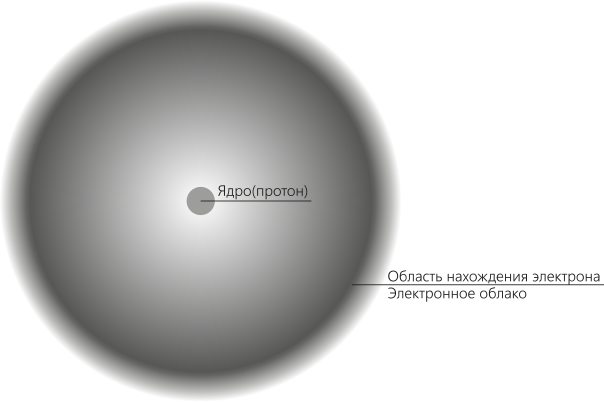
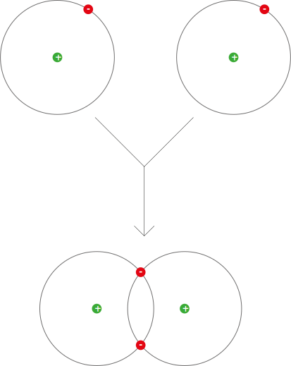

Строение атома.
Атом - мельчайшая частица вещества, неделимая на части химическими воздействиями.

Атом водорода. Скачать изображение
{kind=link}
Заряды протона(1) и электрона(-1) противоположны - атом не заряжен.
Ядро.
Ядро находится в центре атома. Оно не имеет больших размеров, но весит много.
У всех атомов кроме водорода ядро состоит из протонов и нейтронов. Протоны(p+) заряжены положительно. Их количество строго постоянно для каждого элемента. Нейтроны не заряжены, их количество может быть разным для одного и того же элемента.
Номер элемента в таблице Менделеева равен количеству протонов.
Масса атома.
Масса протона равна массе нейтрона, масса нейтрона равна 1 а.е.м.(а.е.м. - атомая единица массы, 1 а.е.м. ∼ 2 * 10-24).
Масса атома равна общему количеству нейронов и протонов в его ядре.
Размеры атома.
1 Å(Ангстрем) = 10-10м
1 fm(Пикометр) = 10-12м
Изотопы.
Изотопы - атомы одного элемента с разным количеством нейтонов в ядре.

Изотопы водорода. Скачать изображение
Электронное облако.
В состав электронного облака входят электроны(e-). Они заряжены отрицательно. Электроны очень быстро вращаются вокруг ядра. Количество электронов в атоме равно количеству протонов, так как атом не обладает зарядом.
Электронные оболочки.
Электроны могут находиться на разном расстоянии от ядра, на разных электронных оболочках(энергетических уровнях).
Чем дальше электронная оболочка от ядра, тем выше энергия электронов, находящихся на ней.
Оболочки заполняются электронами начиная от самой низкой по энергии, и пока первая не заполнилась, следующие не начинают заполняться.
Количество электронов для первых трех оболочек:
- Первая оболочка - до двух электронов
- Вторая оболочка - до восьми электронов
- Третья оболочка - до восьми злектронов
У атомов первого периода только одна оболочка, у атомов второго периода две оболочки, у атома третьего преиода три оболочки.
Химическая связь.
Атомы могут связываться друг с другом различными способами, при образовании связи образуются молекулы(в результате ковалентной связи) или ионы(в результате ионной связи).
Атомы вступают в химическую связь, так как химическая связь обуславливает устойчивость молекулы как целого.
Инертные газы не вступают в химическую связь так как их оболочки заполнены.
Ковалентная связь.
Ковалентная связь образуется путем обобществления электронов. В результате обьединения возникает молекула.

Схема образовани ковалентной связи. Скачать изображение
{kind=link}
Валентные электроны.
Валентные электроны - электроны, участвующие в образовании связи. Они находятся на внешней или валентной оболочке атома.
Множественные ковалентные связи.
Иногда атомы объединяют больше одной пары электронов. Двойная связь образуется обьединением двух пар электронов, тройная связь образутеся обьединением двух пар элеткронов и так далее.
На этом все. Вернуться на главную